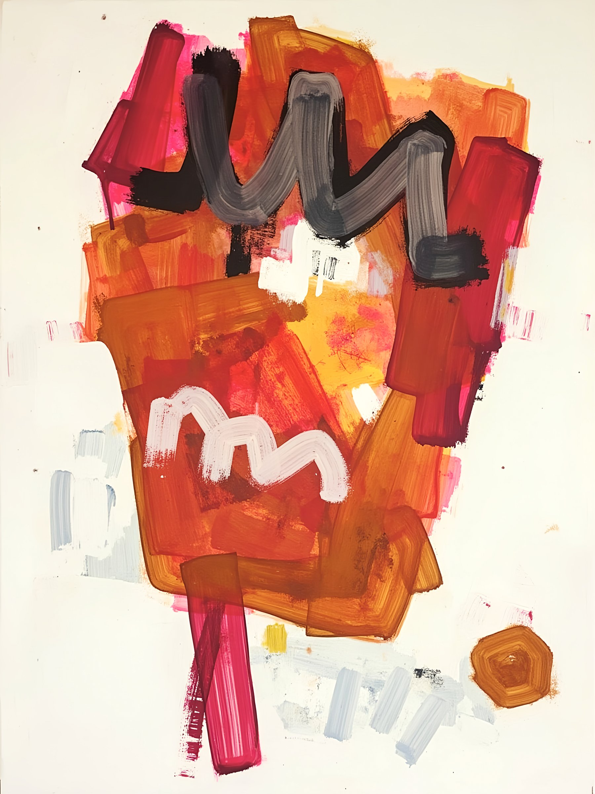
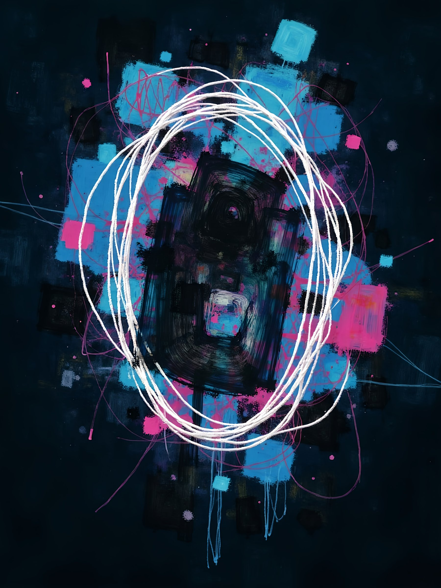
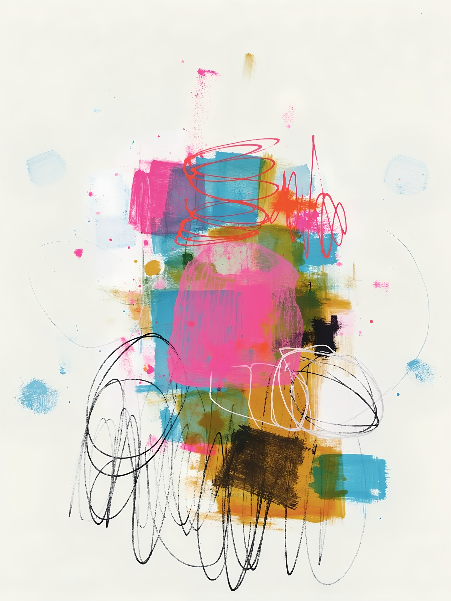
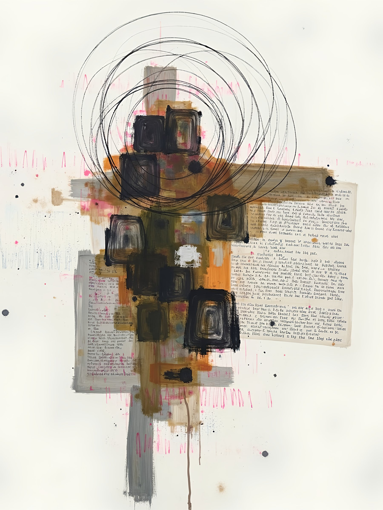

Select an archetype
Portrait Series · 2024–2025
A portrait series exploring the shifting face of influence in the digital age. In a world shaped by networks, platforms, and code, traditional hierarchies are being replaced by a new architecture of power.
Each portrait is abstract and conceptual — not a likeness, but a psychological landscape. An attempt to represent not a face, but a force.
As viewers, we are not just observers. We are participants in the verification process.




Select an archetype